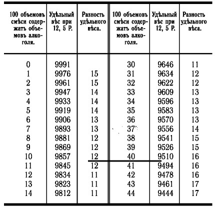
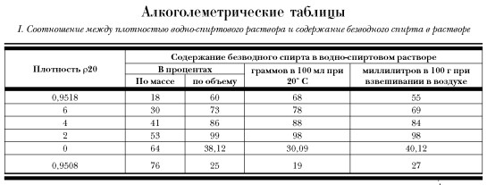
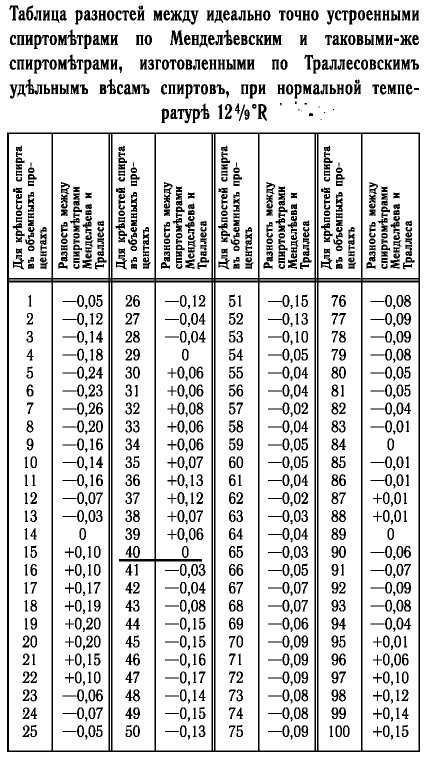
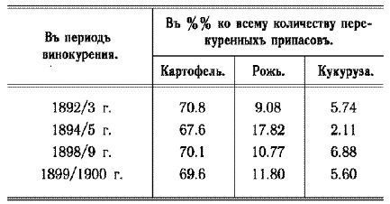
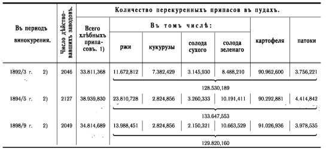

Расцвет полугара и его производных — ароматных водок

Винокурение акцизного периода 60–90-х годов XIX в.
Очень короткий временной отрезок с начала 60-х до середины 90-х годов XIX в. занимает в истории русского винокурения особое место. Впервые в истории государства Российского винокурение, производство и продажа питей стали совершенно свободными. Сословные ограничения были ликвидированы. Для того чтобы заниматься этой деятельностью, достаточно было получить патент. Прежде чем начать производство вина или водочных изделий, необходимо было задекларировать предполагаемый объем выпускаемой продукции и заплатить акциз, то есть налог на будущий продукт. Именно в связи с основным налогом все время, когда действовала эта система производства и продажи крепкого алкоголя, принято называть акцизным периодом. Оценки акцизного периода в истории русского винокурения весьма и весьма неоднозначны и по сию пору. Приведем два диаметрально противоположных мнения:
«Водочная промышленность России во второй половине XIX века достигла значительных успехов. После введения в 1863 году акцизной системы это производство стало развиваться быстрыми темпами — выросло число новых водочных заводов и увеличилось количество выпускаемых водочных изделий, заметно выросло качество продукции водочной промышленности. Именно в это время были созданы предприятия многих известных водочных фирм.
Продукция заводов стала активно вывозиться за границу. В 1889 году экспорт водок (без учета спирта и хлебного вина) составил 186 тыс. рублей. Заметную роль в развитии водочной промышленности стали играть всероссийские и международные выставки.
Крупнейшие водочные заводы приносили государству значительные доходы, выплачивая акциз и бандерольный сбор» [166]
И второе:
«Но акцизная система „не пошла“ в России, она провалилась… с точки зрения своей экономической эффективности и с точки зрения влияния на нравственность общества. Почему? Во-первых, она сразу сильно понизила цены на спирт и водку, и питейный доход казны сразу упал со 100 млн рублей до 85 млн рублей. Во-вторых, не менее резко снизилось качество водки, ибо при низких ценах возросло желание производителей не проиграть в барыше, что вызвало многочисленные фальсификации, замену зернового сырья картофельным и как результат — массовые отравления и смертельные случаи. В-третьих, пьянство, сократившееся в период борьбы народа с откупной системой, вновь достигло умопомрачительных размеров, причём не в виде роста объёмов потребляемой водки, а по своим социальным и медицинским последствиям, поскольку дешёвая низкосортная водка „для народа“, бесконтрольность „новой“, „современной“ рецептуры отдельных водочных фирм привели в целом к катастрофическому росту алкоголизма, к массовому появлению хронических алкоголиков, чего в России до эпохи капитализма при имевшемся многовековом пьянстве всё же не наблюдалось. Чистая русская ржаная водка предотвращала глубокие, органические и патологические изменения в организме» [167]
Хотя ангажированность Похлебкина — автора неоднозначной «Истории водки» на сегодняшний день сомнению не подлежит, тем не менее, высказанная им оценка этого периода до сих пор широко распространена. Во всяком случае, существует целый ряд современных изданий, в которых упорно проводится мысль о том, что абсолютная государственная монополия на производство и продажу крепких спиртных напитков — несомненное благо для народа.[1,2,85,86,87] В такой ситуации выход один — брать в руки первоисточники и на их основании попытаться составить собственное мнение.
Однако, прежде чем перейти к внимательному рассмотрению этой сколь заметной, столь же неоднозначной страницы отечественной винокуренной истории, вернемся ненадолго в самое начало девятнадцатого века.
Еще в полном расцвете классическое русское винокурение и впереди у него шестьдесят лет относительной стабильности. А нам стоит хотя бы бегло взглянуть на то, что происходит в «землях иностранных» — ведь не секрет, что в тот период они серьезно опережали нас и в научной, и в технической сферах. С классической — или, по другой терминологии, дробной дистилляцией там тоже все в порядке. (Дробной потому, что дистилляция производится последовательно по схеме: перегнали — снова залили в куб — перегнали и т. д.[169])
Вполне отлажено производство и коньяка, и бренди, и виски вместе с прочими «брантвейнами», так что для потребления «внутрь» вполне хватает. Проблема в другом:
«…подобные заводы (основанные на однокубовой дистилляции. — Прим. автора ) не могут удовлетворять требованиям настоящаго времени, потому что употребление крепкаго спирта в технике и для других надобностей распространилось до такой степени, что сделалось уже небходимостию устроивать перегонные приборы таким образом, чтобы из перегоняемой браги с перваго же раза можно было получать крепкий спирт» [170]
То есть бурно развивающаяся промышленность потребовала для своих нужд много спирта — максимально крепкого и максимально дешевого. (Например, в химической промышленности этанол служит сырьем для получения многих веществ, таких как ацетальдегид, диэтиловый эфир, тетраэтилсвинец, уксусная кислота, хлороформ, этилацетат, этилен и пр. Велики потребности в нем как в универсальном растворителе при производстве лакокрасочных изделий. Большое количество спирта требуется медицине и парфюмерному производству и т. д. и т. п.) В этих условиях инженерная мысль обратилась в сторону усовершенствования перегонных аппаратов. На первом этапе занялись исключительно оптимизацией процесса охлаждения спиртовых паров: вместо традиционного змеевика-охладителя стали использовать довольно сложные конструкции из так называемых ректификаторов и дефлегматоров, позволяющие получать на выходе продукт более высокой крепости. Это отчетливо иллюстрируется рисунком, на котором слева — традиционный перегонный аппарат, а справа — аппарат Адамса (1801 г.). Обычную спиральную трубку, погруженную в чан с водой, заменяет хитроумное сплетение приспособлений для улавливания и конденсации спиртовых паров и отделения их от паров воды.
Затем, наряду с усовершенствованием дефлегматоров и ректификаторов стали использовать последовательное соединение двух кубов, при котором пары из первого куба нагревали бражку во втором, тем самым повышая концентрацию спирта. Перегонный аппарат подобного типа — так называемый аппарат Писториуса — широко применялся в Германии, а потом и в России.[171] В Шотландии в 1830 г. был представлен аппарат Коффи — первый, позволяющий производить спирт по непрерывному циклу.
И наконец, в 1867 г. появился бельгийский аппарат Савалля, который позволял производить по непрерывному циклу спирт крепостью до 96 %, то есть сопоставимой с современными ректификованными спиртами (96–96,5 %).[89,90]
Вообще же конструкций перегонных аппаратов, призванных производить как можно больше как можно более крепкого спирта, было великое множество. Мы вовсе не ставим перед собой задачу подробно рассказывать об их устройстве — это является предметом специальной литературы. Приведенные схемы лишь иллюстрируют некоторые тенденции развития технического оборудования для производства дистиллятов. Сейчас же подчеркнем основное: в начале второй половины XIX века появилась техническая возможность получения относительно дешевого высокоочищенного, то есть практически нейтрального, спирта. Повлияло ли это на производство спиртных напитков? Безусловно. Причем в разных странах по-разному.
Но не будем забегать вперед и возвратимся к нашей «печке» — в Россию рубежа XVIII–XIX вв.
Конечно, нельзя сказать, что в русском винокурении до начала 60-х годов не происходило никаких изменений. Кое-что все-таки было: введение в употребление спиртометров и постепенный переход на замену открытого огня паром.
Инструментальное измерение крепости водно-спиртовых растворов в основе своей довольно простая штука. Плотности воды и спирта не одинаковы. Поэтому, измерив плотность смеси спирта с водой, мы можем путем некоторых вычислений определить процентное содержание обоих компонентов. Измерение же плотности жидкостей, в свою очередь, основано на законе Архимеда.
Прибор для измерения плотности — ареометр — по сути, поплавок с делениями. Однако, как водится, то, что просто в теории, далеко не всегда просто на практике. Во-первых, необходимо было как можно точнее определить удельный вес безводного спирта, что для конца XVIII — начала XIX в. было задачей не простой. Во-вторых, в связи с тем, что плотность растворов зависит от температуры, нужно было составить специальные таблицы, позволяющие корректировать показания спиртометра для разных температурных условий. В-третьих, предстояло определиться, какие же проценты брать за основу — весовые или объемные. Первые определяются проще и точнее, так как не зависят ни от температуры, ни от контракции, то есть сжатия смеси при соединении спирта с водой. Вторые же значительно удобнее в практическом применении: каждый раз перед смешиванием производить взвешивание значительных объемов воды и спирта крайне нетехнологично. И еще: важно понимать, что спиртометры-ареометры годятся лишь для чистой водно-спиртовой — т. е. бинарной, двухкомпонентной — смеси. Любые добавки, влияющие на плотность раствора, приводят к серьезным искажениям результата. Так, например, измерять подобным спиртометром крепость ликера — занятие бессмысленное.
Однако, рассуждая на столь специальную тему, лучше предоставить слово профессионалам:
«Правильный путь к определению действующего начала в спирте был найден в XVIII в. Реомюром, который указал, что образцы спирта различной крепости обладают различными удельными весами. Выбор, уд. весов, как мерила крепости спирта, следует признать весьма удачным, так как уд. вес спирта изменяется с концентрацией однозначно, т. е. каждому уд. весу отвечает одна и только одна концентрация (чего не наблюдается для других свойств водноспиртовых растворов, как напр. для показателей преломления света или теплоемкости). Но, как показал уже Реомюр, при смешении спирта с водой происходит сжатие, и уд. вес растворов воды и спирта весьма сложно изменяется с концентрацией растворов. Единственный путь для практического определения концентрации раствора (крепости) — составление подробных таблиц, в которых на основании опытных данных рассчитаны уд. веса и концентрации водноспиртовых растворов возможно гуще (через 1 %).
Впервые такие подробные алкоголометрические таблицы были составлены в Англии Гильпином в 1792–1796 г. Гильпин получил абсолютный (как ему казалось) этиловый спирт, приготовил 40 растворов его с водой и определил их уд. веса при 60° Ф., отнеся их к воде при той же температуре 60°Ф; по этим данным он вычислил подробные таблицы. В 1800 г. аналогичную работу произвел во Франции Дюма, в 1811 г. в Германии — Траллес, в 1824 г. опять во Франции — Гей-Люссак.
Наиболее интересна судьба работы Траллеса. Траллес получил абсолютный этиловый спирт гораздо более крепкий, нежели Гильпин, по его вычислениям исходный спирт — Гильпина содержал только 98,2 % этилового спирта (по данным Менделеева — 89,06 %), следовательно таблицы Гильпина совершенно неверны. Траллес переопределил уд. веса для нескольких крепких растворов, исправил данные Гильпина для остальных концентраций и составил таблицы, введя объемные проценты вместо весовых. В 1847 г. Брикс упорядочил данные Траллеса. В итоге результаты Траллеса и Брикса легли на долгое время в основу германской и русской официальной алкоголометрии.
В виду экономической важности точного учета спирта, в различных странах непрерывно со времени Гильпина различными учеными переопределяются уд. веса водноспиртовых растворов. Интересно, что наиболее важной работой в данном отношении оказалась чисто научная работа Д. И. Менделеева 1865 г. („О соединении спирта с водой“). Центр тяжести исследования Менделеева лежал в получении безусловно абсолютного спирта. После долгих трудов Менделееву это удалось, и мы ныне можем смело сказать, что Менделеев был первым ученым, имевшим в своих руках абсолютный спирт (100 %-ный). Не менее тщательные определения уд. весов, растворов спирта и воды позволили Менделееву составить алкоголометрические таблицы, которые разошлись с официальными таблицами всех стран.
В восьмидесятых годах (XIX в. — Прим. авт.) , в Германии была произведена реформа, — таблицы Траллеса были забракованы, взамен их составлены новые, причем для 15° Ц. по данным Менделеева, а для других температур по дополнительным данным Германской Поверочной Комиссии; за нормальную температуру было принято 15° Ц., за единицу — весовой процент. Вслед за Германией и другие страны предприняли проверки и исправления своих таблиц, причем всюду в основу были положены данные Менделеева. В Соединенных Штатах знаменитый Морлей составил таблицы, опять-таки руководствуясь работой Менделеева» [173]
Цитируемая статья была написана в 1920 г., когда в России, а точнее в СССР, измерения крепости спиртов производились еще по Траллесу. Только пять лет спустя были изданы пересчитанные таблицы[174], а позднее использование спиртометра Траллеса было официально запрещено.
Впрочем, неспециалистов, как правило, интересует лишь один вопрос: как соотносятся современные градусы и градусы по Траллесу, иными словами, сколько привычных нам градусов было в дореволюционной водке? И тут нельзя не сказать о серьезной неточности, возникшей из-за небрежности двух весьма достойных авторов очень серьезных работ по истории алкогольных дистиллятов. Один из них (Л. Бондаренко, «Из истории русской спиртометрии») сообщил следующее:
«Менделеев показал, что „нормальный“ спирт Траллеса содержит лишь 88,55 % спирта» [175]
При этом утверждалось, что «нормальный» и «безводный» спирт по Траллесу — одно и то же, и не уточнялось, какие проценты — объемные или массовые — имеются в виду. Другой же (В. Григорьева, «Водка известная и неизвестная XIV–XX веков») просто взял указанный процент от сорока градусов и получил совершенно несуразную цифру:
«… в 40 % вине, по Траллесу, на самом деле содержалось всего 35,42 % безводного спирта, по Менделееву, (в объемных процентах)» [176]
Тут же вспоминается реплика незабвенного Воланда:
«Вы, профессор, воля ваша, что-то нескладное придумали! Оно, может, и умно, но больно непонятно. Над вами потешаться будут» [177]
Выходит, с 1925 г. водка в СССР «окрепла» более чем на четыре с половиной градуса, а никто и не заметил… Между тем, в уже цитируемой выше статье говорится:
«… ошибки (Траллеса. — Прим. авт. ) невелики, но все же при огромных оборотах спирта заметные» [178](Выделено авт. )
Для того чтобы «заметить» четыре с половиной процента, «огромных оборотов» не требуется, достаточно «оборота» в один глоток. Так что же на самом деле? Снова разбираемся вместе. Для этого нам потребуются две таблицы, связывающие плотность водно-спиртовой смеси с процентным содержанием безводного спирта по объему — Траллесова и современная. Первую берем из книги 1863 г.[179]
Траллес составил верную таблицу, показывающую в означенных смесях количество алкоголя для каждого их удельного веса; поэтому объемные проценты называются обыкновенно процентами по Траллесу Мы предлагаем здесь эту таблицу.

Как видим, сорока объемным процентам соответствует удельный вес (в данном случае численно совпадающий с плотностью) 0,9510 при 12,5 градуса по Реомюру. Далее заглядываем в современную спиртометрическую таблицу.[180]
Здесь мы видим цифру, серьезно отличающуюся от 35,42 %, а именно 38,12 %. Необходимо еще учесть, что 12,5 град. Реомюра приблизительно равны 15 град. Цельсия, а современные таблицы составлены для 20 градусов. При этой температуре мы получим… все те же 40 %. Л. Бондаренко в упомянутой статье совершенно справедливо указывает, что в 1897 г. вышла книга старшего ревизора Подольского акцизного управления К. Н. Рубисова «Основные данные практической алкоголометрии и их применение». Автор, в очередной раз указав на неточность таблиц Траллеса, выполнил, по собственному определению, «труд простого счетчика»: в его книге — 18 таблиц, вычисленных на основе данных Менделеева и по его формулам. Вот мы и заглянем в эту книгу. А в ней черным по белому написано следующее:
«…для нормальной температуры действительные крепости спиртов, вычисленные по истинным удельным весам спиртов, будут несколько разниться с официальными таблицами, вычисленными по удельным весам спиртов, принимаемых Траллесом, а именно, что официальная таблица для 8 показаний определяет действительную крепость на 0,1 больше, в 52 случаях — на 0,1 менее, в 7 случаях — менее на 0,2 и в 33 случаях дает согласные показания из числа всех 100 показаний для целых делений шкалы при нормальной температуре» [181]

Далее автор приводит таблицу, в которой представлены «многочисленные разницы с официальными таблицами, в особенности значительные для температуры ниже нормальной, при которых доходят нередко до 0,3 %». То есть максимальная разница, да и то лишь при низких температурах, не превышает 0,3 %! Так что «дореволюционные» 40 % вполне соответствуют 40 % нынешним. Для того чтобы закрыть тему, приведем из другой брошюры того же автора еще одну весьма показательную таблицу.[182] Как видим, при наших любимых 40 % таблицы Траллеса и современные таблицы дают нулевое расхождение.

Официально использование спиртометров в России было введено с 1843–1847 г.[183] и в немалой степени способствовало, так сказать, «стандартизации» спиртных напитков, а также повышению качества продажного вина. Кстати, так как теперь отпала необходимость для проверки «доброты» «чинить опыты», то для удобства наши «старые знакомые» получили новую «градусность»: пенное вино — 44,25 %, трехпробное — 47,4 %.
Полугар остался при своих «законных» 38 % по объему, так как по нему продолжали делать контрольный отжиг. Впоследствии сами по себе понятия, изначально связанные с неинструментальными методами определения крепости, канули в небытие, причем дольше всех продержался старина полугар — до последней трети XIX в.
Другое заметное нововведение начала девятнадцатого века — паровое винокурение . Вот цитата из книги 1827 г. с характерным названием «Описание выгоднейшего способа винокурения посредством огня и водяных паров»:
«… многое уже у нас сделано; ибо в течение двадцати лет, не только произведены улучшения разного рода в обыкновенном винокурении; но в последнее время учинены удачные опыты употреблением горячих водяных паров, вместо непосредственного жара огня» [184]
Использование пара вместо открытого огня, впервые предложенное во Франции «крестьянином Стоном (Stone)»[185], быстро завоевало популярность в Европе.
Русские винокуры также по достоинству оценили все преимущества этого метода. Во-первых, раз и навсегда было покончено с древнейшим врагом винокуров — «пригарью»; во-вторых, экономилось топливо; в-третьих, значительно проще стало соблюдать температурные режимы; в-четвертых, появилась возможность делать деревянные перегонные кубы. Если с первыми тремя пунктами все более-менее ясно, то на четвертом стоит остановиться чуть подробнее. Многие русские винокуры, привлеченные дешевизной, начали изготавливать деревянные кубы, однако вскоре убедились, что экономическая выгода весьма относительна: из-за пористости материала выходы дистиллята значительно уменьшились; кроме того, деревянные кубы недолговечны, и их приходилось часто менять.[186] Однако нас с вами интересует в первую очередь не экономическая сторона дела, а то, как отражается замена материала перегонных кубов на качестве производимой продукции — хлебного вина. Дерево, в отличие от меди, химически нейтрально и «не содержит в себе ничего вреднаго для здоровья» [187]
На этом обстоятельстве основывалось достаточно распространенное мнение, что
«брага, перегоняемая в луженых снарядах, дает иначе пахучий перегон, нежели в медных, стеклянных и деревянных, так что в последних перегоняемая жидкость дает запах сырых хлебных зерен, так как в ней летучие масла должны оставаться без всякого изменения» [188]
(Кстати сказать, деревянные перегонные кубы широко использовались на мелких винокурнях в Германии.[189])
С другой стороны, не будем забывать о способности меди связывать в процессе перегонки
«нежелательные химические элементы, в основном и отвечающие за неприятный запах, который может появиться в дистилляте» [190]
Вот уж эти вечные «с одной стороны, с другой стороны…»! Так мы, по-видимому, никогда и не узнаем, какое же вино было вкуснее — из деревянных или из медных кубов. Разве что какой-нибудь самогонщик-энтузиаст не отважится на серьезный эксперимент (смайлик).
Но, как бы там ни было, ничего принципиального в классическое винокурение эти нововведения не привнесли. По-прежнему главный продукт — хлебное вино — производился в простых однокубовых аппаратах по традиционной винокуренной технологии и с удовольствием потреблялся абсолютным большинством населения. А для гурманов существовали изысканные напитки на основе того же хлебного вина, изготовленные в основном «для себя». Был, правда, еще и третий вариант, представлявший собой абсолютно тупиковую ветвь русского винокурения — своего рода «псевдоводки»: до неприличия разбавленный полугар, наспех «сдобренный» какой-либо травкой.
Создание подобного рода напитков было напрямую связано с так называемой «откупной системой».
Здесь надо сказать, что производство и продажу алкогольных дистиллятов Российское государство испокон века считало своей исключительной привилегией
«… питейная продажа есть издревле короне принадлежащая регалия, как то и уложением 157 года (имеется в виду Уложение 1649 года. — Прим. авт. ) неоспоримо доказывается…» [191]
и пользовалось этой привилегией «по полной программе». О принципиальной роли государства в производстве крепкого алкоголя мы поговорим в главе, посвященной винной монополии 1895 г., сейчас же нам важно понять, что представляла собой «откупная система».
«Винные откупа — специфическая, характерная для дореформенных экономических отношений в России форма налогообложения в „питейной“ торговле, практиковавшаяся в России до введения акцизного налога» [192]
Очень кратко суть ее сводится к следующему: внеся в казну оговоренную сумму денег, некое лицо получало право от имени государства организовывать торговлю спиртными напитками на определенной территории. Хлебное вино откупщик брал либо «из казны», либо — опять-таки от имени государства — по подряду от дворян-винокуров по жестко фиксированным ценам. То есть схема такова: заключил с государством типовой контракт — внес деньги авансом — «отбиваешь» эти деньги, имея монопольное право торговать спиртным, допустим, в Тульской губернии.
Однако фокус заключался в том, что откупщик обязан был продавать хлебное вино фактически по заготовительным ценам, то есть без «барыша». Но при этом он имел право производить из хлебного вина различные водочные изделия, крепость которых не была жестко лимитирована, и продавать их со значительной наценкой, правда, тоже фиксированной. Не надо быть экономическим гением, чтобы догадаться, как поступали откупщики в подобных условиях. Изготавливалось как можно больше слабенькой бурды, сдобренной чем-нибудь очень пахучим, и пускалось в продажу под названием, ну, скажем, «Русская анисовка». Не покупают? Не беда. Объявляем, что полугар и пенник закончились — и вся недолга. Хотите не хотите, а купите, мы же монополисты. Это, конечно, картинка несколько утрированная, но совсем чуть-чуть. Дело доходило даже до народных волнений.[193] Правда, начиная с 30-х годов в России стали организовываться небольшие водочные заводы (напомним, что водочное производство, в отличие от винокуренного, не являлось сословной привилегией), которые выпускали высококачественную продукцию. Однако им было трудно существовать в условиях откупной системы, и выживали в итоге немногие, такие как завод Федора Штритера в Петербурге, сыгравший впоследствии яркую роль в истории русской водочной промышленности.[19,92]
Таким в общих чертах было состояние винокурения и «водочного дела» в России к 1861 году — году отмены крепостного права и вступления страны на путь развития капитализма. В том же историческом 1861 году вышло «Положение о питейном сборе» от 4 июля, в соответствии с которым винные откупа были ликвидированы, а полутора годами спустя состоялась своего рода «отмена крепостного права в винокурении»:
«С 1 января 1863 г. в России вводилась акцизная система взимания косвенных налогов с алкогольных напитков, которая предусматривала обложение спиртных напитков косвенными налогами непосредственно на спирто-водочных заводах, т. е. в сфере производства. Акцизная система допускала свободу винокурения и виноторговли…» [195]
Практически сразу же начинают стремительно возникать частные купеческие винокуренные и водочные заводы, а вот винокурение дворянское начинает постепенно «хиреть», и к началу восьмидесятых фактически исчезает.
С легкой руки В. В. Похлебкина в определенного рода литературе существует крайне поверхностное объяснение этого явления. Например, у Е. Кручины читаем:
«… правительство Екатерины II закрепило монопольное право на винокурение за дворянами. Все остальные сословия (купечество, духовенство, мещанство, крестьянство) лишались права на изготовление водки и были обязаны покупать ее исключительно у казенных заводов. Высочайшее дозволение „курить вино только дворянам и их фамилиям, а прочим никому“ в конце концов привело к тому, что в. стране выделились два направления производства спиртного. Одно из них можно определить как область коммерческого алкоголя. Здесь царило низкокачественное хлебное вино, которое государство производило для широких народных масс исключительно для пополнения вырученными средствами государственного бюджета.
Совсем иные, элитные напитки делали в дворянских винокурнях. Здесь гнали „для себя“. Эта продукция никогда и никому не продавалась, и потому ее изготовителю не надо было заботиться о таких „низменных“ материях, как спрос, прибыль, снижение затрат. Имея серьезные экономические возможности и неограниченную дармовую рабочую силу, помещики, насколько можно судить, ставили перед собой совсем иные задачи: получить удовольствие, удовлетворить тщеславие, а иногда и просто досадить соседу. <…>Нет нужды говорить о том, что „дворянские“ водки отличались высочайшим качеством и чистотой. В то же время их производство было крайне нетехнологичным.
Такое производство могло быть обеспечено только в условиях абсолютного господства правящего класса. Поэтому, золотой век русской водки, начавшийся в царствование Екатерины II, в эпоху фаворитов и напудренных париков, спокойно пережил бурные времена Наполеоновских и прочих войн, но моментально закончился после отмены крепостного права в 1861 году…» [196]
Увы! Это сказка. Начнем с того, что здесь в одно целое сведены два разных производства — винокурение, как производство базового продукта — вина, и дистилляторство, как изготовление напитков на основе хлебного вина. В предыдущей главе мы показали, что процесс изготовления простого хлебного вина был един что для больших винокурен, что для малых, что для дворянских, что для казенных. Более того, большинство дворян подряжалось курить вино для казны, так что большая часть вина в казне было именно «дворянского происхождения». Принималось вино в казну от казенных и дворянских винокурен по единому критерию, о котором мы тоже говорили. Все же ухищрения, связанные с многочисленными перегонками, очищением, настаиванием и проч., начинались на стадии дистилляторского производства, т. е. изготовления из хлебного вина «тонких» напитков, и производились на другом (не винокуренном, а специальном «дистилляторском») оборудовании.
Так что суть здесь совершенно в другом. Дворянское винокурение было сельскохозяйственным , то есть существовало по принципу: вырастил зерно — переработал его в спирт, спирт сдал в казну и получил за это деньги, а отходы спиртового производства (так называемую барду) пустил на корм скоту. Получался цикл, весьма полезный для сельского хозяйства в целом. Однако в условиях свободы производства и жесткой конкуренции, в которых винокурение оказалось после введения акцизной системы, такой тип производства оказался неконкурентоспособным. Действительно, «новые заводчики» не были привязаны при размещении производства к определенному месту, могли строить предприятия значительно более крупные, не зависели от урожая нынешнего года, так как могли покупать сырье там, где оно дешевле, и пр. И продукция дворянских винокурен, чья себестоимость в силу указанных причин была выше, просто оказалась невостребованной. А если так, то зачем заниматься весьма трудоемким винокурением? Кстати, давайте вдумаемся: если дворянское винокурение было исключительно «винокурением для себя» и не носило коммерческого характера, то какая разница была дворянам от того, имели они монополию на винокурение или нет? Я дворянин, я занимаюсь изготовлением напитков для себя и плевать мне на то, имеют ли право курить вино еще и, допустим, купцы.
Так что основная причина исчезновения дворянского винокурения вполне классическая — «мануфактура не выдержала конкуренции с промышленными предприятиями». Однако в этом случае все-таки остаются некоторые вопросы. Приведем, на наш взгляд, ключевой. Почему в других странах, несмотря на колоссальное развитие спиртовой промышленности, производство напитков-дистиллятов (виски, коньяк, текила и пр.), да и «водочных изделий» (шнапсы, ликеры, настойки) так и остается «мануфактурным» до настоящего времени? Отчасти мы попробуем ответить на него, рассматривая историю винной монополии, сейчас же попытаемся разобраться в том, как были оборудованы «новые русские» винокуренные и водочные заводы, какую продукцию производили и какими законодательными актами реагировало российское правительство на изменившуюся ситуацию.
Первое, что приходит в голову, когда речь заходит об акцизном периоде, — бренды дореволюционной России, такие как «Смирновская водка» и «Шустовский коньяк», пестрые бутылочные «этикеты», многочисленные медали всемирных выставок да звонкий титул «поставщик императорского двора».
Но это лишь витрина. Давайте попробуем разобраться, что же по существу изменилось в русском винокурении и водочной промышленности за этот короткий (в историческом смысле) период.
Основой всех изменений явилось то, что отрасль впервые в своей истории оказалась в условиях жесткой конкурентной борьбы. Отсюда — стремление всеми способами повысить привлекательность продукции, всевозможные «ноу-хау», техническое перевооружение в попытках снизить себестоимость товара и, конечно же, «его величество маркетинг». Поскольку нас в первую очередь интересует продукция как таковая, вначале мы обратим внимание на примечательный факт — смену самого массового продукта потребления. Место полугара, а равно и пенника с трехпробным, постепенно заняло так называемое «очищенное вино».
Как мы помним, в классическом русском винокурении очистка применялась в основном в двух случаях: когда надо было избавиться от «пригари и дурнаго запаха», образующихся при неудачной перегонке, и для изготовления «французской водки», практически лишенной специфического вкуса «хлебного вина». Причем «французская водка», как правило, не использовалась в качестве самостоятельного напитка, из нее делали ликеры высшего качества. Правда «очищенное вино» появилось в продаже уже в 50-е годы как улучшенный вид простого вина.[197]
За годы же акцизного периода, к началу 90-х, оно уже почти полностью вытеснило простое вино, так что сами по себе понятия «полугар», «пенник» и «трехпробное» стали забываться. Практически на всех заводах, выпускавших вино для продажи (а этим занимались и винокуренные, и водочные заводы, а также оптовые склады), появились специальные очистные отделения, устройство которых с 1885 г. стало регулироваться законодательно:
«При очистке вина холодным способом, в оптовых складах и на винокуренных заводах разрешается пропускать вино через песок, уголь, сукно и всякого рода другие вещества, не растворяющиеся в вине» [198]
Из приведенной цитаты следует, что вино, очищенное «холодным способом», есть не что иное, как «старый знакомый» полугар, пропущенный через «вещества, не растворяющиеся в вине». А поскольку
«большая часть очищенного вина, поступающего в потребление внутри России, приготовляется посредством холодной очистки», [199]
то о ней сейчас и пойдет речь. Попробуем понять, как же эта процедура отражалась на химических и органолептических свойствах продукта. Ну, функция песка, сукна и пр. понятна: освобождение жидкости от механических частиц, попавших в нее в процессе дистилляции, хранения или перевозки, т. е. простая фильтрация. А вот на действии угля надо остановиться подробнее.
Выше мы уже отмечали, что открытые петербургским академиком Ловицем в 1785 г. адсорбционные свойства угля со временем стали широко использоваться в винокурении. Древесный уголь весьма активно купировал специфический привкус «сивухи». Причем до середины XIX в. специалисты полагали, что это связано с удалением сивушных масел:
«Изо всех материалов, предложенных для обезсивушивания, чаще всего употребляется уголь…» [200]
Позднее пришло понимание, что
«… отнятие сивушного масла углем гораздо слабее, нежели это обыкновенно предполагают…» [201]
И, наконец, в начале двадцатого века механизм действия древесного угля на водно-спиртовые смеси был сформулирован следующим образом:
«1. Уголь адсорбирует газы и пахучие тела.
2. Сгущенный в порах угля кислород действует окисляющим образом на спирт и прочие тела.
3. Уголь поглощает альдегиды и эфиры.
4. Уголь немного поглощает сивушное масло.
5. Содержащийся в угле поташ нейтрализует кислоты, причем четвертое и пятое свойство угля не существенны» [202]
Другими словами, обработка углем практически не освобождает спиртовую смесь от сивушных масел, но весьма и весьма заметно «смягчает» ее вкус.
Теперь зададимся следующим вопросом: почему во второй половине XIX в. практически все продажное хлебное вино стало очищаться? Казалось бы, ответ лежит на поверхности: получив возможность выбирать между напитками с «жестким» и «мягким» вкусом, потребитель предпочел более мягкий. Однако подобное объяснение вызывает серьезные сомнения. С трудом можно представить себе, чтобы народ, веками привыкший пить «простое хлебное вино» с вполне определенной вкусовой составляющей, поголовно предпочел бы значительно более «мягкую» его модификацию. В этом смысле весьма показателен пример, который приводит Кропоткин:
«… в 1814 и 1815 годах, когда союзныя войска занимали Францию, в Нормандии открылось несколько винокурен, специально приготовлявших неочищенную водку для армий, солдаты коих очень ценили в водке сильный характерный запах сивухи» [203]
А вот не менее выразительное свидетельство, хотя и относящееся к «землям иностранным». Профессор Вериго в отчете 1889 г., посвященном изучению швейцарской винной монополии, рассказывает о
«… образовавшейся у некоторой значительной части потребителей вкусовой привычке к особенному сивушному маслу картофельного спирта, которое считается необходимою принадлежностью вина, его букетом». Причем «правительство не находило основания противодействовать этому направлению вкуса…» [204]
Рискнем предположить, что одной из причин поголовной очистки стали серьезные структурные изменения в сырьевой составляющей винокурения — в первую очередь постепенное вытеснение традиционной ржи картофелем. Еще в начале тридцатых годов XIX в. положение с использованием картофеля в российском винокурении было следующим:
«Картофель, по свойству своему, весьма годен для извлечения из него вина, и потому во многих странах Германии он для сего предмета заменяет хлеб. Но, хотя из картофеля приобретается вина в большем количестве, при всем том картофельное винокурение не во всех местах может быть производимо с равным успехом. Сие относится и к России: ибо картофель сажается во многих странах России в столь малом количестве, что онаго едва достаточно для употребления в пищу, а потому он дороже хлеба. Сверх сего, для обработывания достаточного количества, в замене хлеба, потребуется в трое большее число работников: равным образом и при добывании из онаго вина, число работников должно быть увеличено. … Картофельное винокурение тогда только может быть в России с успехом производимо, если во 1, число работников будет умножено; во 2, когда более будет введена система плодопеременного хозяйства, и в 3, когда хлеб будет дороже картофеля» [205]
Однако с сороковых годов ситуация стала стремительно меняться.
«Особенно быстро стали увеличиваться площади под картофель в 1840–1842 годах. 24 февраля 1841 года вышло распоряжение российского правительства „О мерах к распространению разведения картофеля“. Тиражом в 30 000 экземпляров по всей России разослали бесплатные наставления по правильной посадке и выращиванию картофеля. Ежегодно всю информацию о выращивании картофеля губернаторы отсылали в Петербург. К концу XIX века в России им было занято более 1,5 млн га» [206]
Не стояли на месте и технологии. Начиная с семидесятых годов в винокурении широкое распространение начинают получать аппараты, позволяющие производить распаривание сырья под давлением, что позволило вырабатывать спирт из картофеля даже с меньшими трудозатратами, нежели из зерновых. Мы здесь приводим, как обычно без технических подробностей, схему одного из них — так называемого аппарата Генце.
В результате к девяностым годам мы имеем следующую картину:[207]
Или то же самое в процентах:

То есть зерновое, а фактически ржаное винокурение России к концу девятнадцатого века постепенно превратилось в картофельно-злаковое. Разница во вкусе между вином изо ржи и вином из картофеля очевидна. (Правда, здесь мы вынуждены положиться на мнение наших предков. Самим пробовать не доводилось.) Так что вполне вероятно, что повсеместная «холодная» очистка вина (не говоря уже о «горячей», речь о которой чуть ниже) так или иначе связана со стремлением всячески нивелировать эту разницу, чтобы не вызвать отторжения потребителя.

Это, подчеркиваем, всего лишь предположение, которое так же трудно доказать, как и опровергнуть. В любом случае обработка вина углем — процедура весьма полезная.
Надо сказать, что российское правительство никогда и ничего не делало для того, чтобы сохранить винокурение изо ржи как национальную особенность. Перегонять можно было практически все, что угодно:
«Выкурка вина и спирта дозволяется из хлеба, солода, свекловицы, картофеля, свеклосахарных остатков и других припасов…» [208]
При этом никакого различия между спиртами из разных «припасов» не делалось. В разные периоды русской истории нормативными документами спирты подразделялись по крепости и по степени очистки, но только не по сырьевой составляющей. Отчасти это можно объяснить заботой «о сбережении в России хлеба», а то ведь бывало и такое:
«… все лучшие сорта хлеба…» употреблялись «на винокурение, отчего в последнее время обнаружился явный недостаток в зерновых семенах» [209]
А вот о традиционном русском винокурении заботы никто не проявлял. Не до этого было.
Еще одно заметное изменение в винокурении связано исключительно с техническим прогрессом. Вместо однокубовых перегонных аппаратов повсеместно получили распространение двухкубовые — преимущественно уже упоминаемый нами аппарат Писториуса. Усовершенствованные перегонные снаряды позволяли непосредственной перегонкой раки получать вместо ~ 38–45 %-ного вина спирт крепостью 75–85 %. Кроме того, как мы уже говорили, широкое распространение начинает получать очистка вина, которая производится в специальных спиртоочистительных отделениях заводов «горячим» и «холодным» способами. С холодной очисткой мы уже разобрались. А горячая очистка — это дополнительная перегонка спирта в аппаратах, снабженных ректификаторами и дефлегматорами, позволяющая получать спирты крепостью свыше 90 %, но значительно удорожающая (на тот период) производство.[210] Так что винокурение де-факто превратилось в спиртовую промышленность. Вообще же в акцизный период стараниями Российского правительства произошло окончательное разделение спиртового и водочного производств, что ясно было отражено в законодательных документах.[211]
Структурно спиртовая и водочная промышленность начиная с 1886 г. состояла из предприятий четырех типов: винокуренные заводы, водочные заводы, спиртоочистительные заводы и оптовые склады.
Винокуренные заводы (винокурни) производили собственно выкурку вина и спирта. Использовать при перегонке «травы, ягоды и другие припасы» было запрещено.[212] Помимо собственно выкурки винокурни имели право очищать вино и спирт, но только собственного производства и в специальных очистных отделениях, а также изготавливать из этого вина водочные изделия:
«Винокуренным заводам разрешается выделывать водки на основаниях, установленных… для водочных заводов по окончании винокурения, из вина и спирта собственной выкурки» [213]
Простое вино и спирт продавались как оптом, так и в розницу. Очищенное вино и водочные изделия — только в розницу, причем розничную продажу винокуренные заводы могли осуществлять исключительно через собственный магазин.
Оптовые склады покупали вино и спирт на винокурнях и имели право производить очистку. Продавать они могли как очищенное, так и неочищенное вино, и спирт без ограничений.
Спиртоочистительные заводы покупали спирт и производили его очистку. Продавать они имели право только очищенное вино. Продажа простого вина и спирта была возможна
«… не иначе, как со взятием патента на оптовый склад и на условиях, для складов установленных» [214]
Что же касается заводов водочных, то:[215]
§ 1. Водочные заводы или приготовляютъ только водочныя изделiя или, вместе съ темъ, производятъ и очистку вина и спирта для продажи.
Примечанiе. Продажа неочищеннаго вина и спирта съ водочныхъ заводовъ вообще воспрещается.
§ 2. Водочные заводы перваго рода снабжаются однимъ патентомъ, заводы втораго рода должны иметь два патента (ст. 38 Высочайше утвержденныхъ 9 декабря 1885 г. правилъ), — одинъ на выделку и продажу водокъ, а другой на приготовленiе и продажу очищенныхъ вина и спирта.
§ 3. На спиртоочистительныхъ заводахъ производится только очистка вина и спирта и продажа ихъ; обращать в продажу неочищенное вино и спиртъ заводы эти могутъ не иначе, какъ со взятiемъ патента на оптовый складъ и на условiяхъ, для складовъ установленныхъ.
На каждый из видов деятельности необходимо было получать отдельный патент.
Итак, в продаже в акцизный период имелись: простое (неочищенное) вино, спирт, очищенное вино, и водочные изделия. Понятие «водочные изделия» формулировалось так:
«Водочными изделиями признаются приготовляемые из вина и спирта особые напитки (водки, настойки, наливки и т. п.)» [216]
В этот же период появляется новый продукт — «столовое вино».
Простое (неочищенное) вино — все тот же полугар, который со временем было все труднее и труднее приобрести, так как он продавался либо оптом, либо в магазинах при винокурнях и оптовых складах.
Очищенное вино, как мы уже видели, это полугар, пропущенный через угольные фильтры.
А вот на так называемом «столовом вине» стоит остановиться подробнее. Кто и когда придумал сам термин, установить не просто, да и нет особой необходимости, хотя есть основания[217] предполагать, что авторство принадлежит П. А. Смирнову. Факт тот, что уже с конца семидесятых — начала восьмидесятых годов любая сколько-нибудь уважающая себя фирма считала для себя обязательным иметь в своем прейскуранте несколько видов «столового вина». При этом разновидности его отличались номерами: «Столовое вино такого-то, № такой-то».
С точки зрения законодательства столовое вино являлось всего лишь разновидностью вина очищенного, а по сути представляло собой совершенно новый тип алкогольного напитка. Дело в том, что столовое вино производилось исключительно из спирта, подвергнутого горячей очистке, то есть ректификованного, причем чаще всего — дважды ректификованного, а затем уже пропущенного через угольные фильтры. То есть и технологически, и органолептически «столовое вино» было прообразом современной водки. Исследования, проведенные Техническим комитетом Департамента неокладных сборов в 1897–1898 гг. показали, что в столовом вине частных производителей содержится ничтожное количество сивушных масел и альдегидов, т. е. по сути это практически чистая водно-спиртовая смесь, обработанная древесным углем.[218]
Кстати, попутно возникает вопрос: откуда тогда такое обилие разновидностей столового вина — по нескольку наименований у каждого производителя? Ответ в том же источнике: использовалась разная вода, разное количество угля и разные скорости фильтрации через него. Фактически столовое вино имело «характерный спиртовой запах и вкус» — чуть более мягкий или более жесткий, чуть более «щелочной» или нейтральный в зависимости от своего «номера» и производителя.
Таким образом, столовое вино органолептически принципиально отличалось от вина очищенного и тем более неочищенного: оно было напрочь лишено мощной вкусовой составляющей, обусловленной естественными примесями, образующимися в процессе обычной перегонки — сивушными маслами, эфирами и альдегидами. С некоторым приближением можно сказать, что столовое вино соотносилось с очищенным как современная водка соотносится с самогоном. Столовое вино, естественно, стоило существенно дороже, так как аппаратов непрерывного действия (брагоректификационных), способных непосредственно из бражки получать высокоочищенный спирт, в России еще не было, а дополнительная перегонка в спиртоочистительных отделениях — процедура не дешевая. Позиционировалось столовое вино как «элитное», своего рода «премиум» тех лет и довольно быстро нашло своих почитателей. Правда, было их ничтожное количество: по данным того же Технического комитета — не более 1,5 % от общего числа потребителей. Абсолютное же большинство по-прежнему предпочитало продукцию с привычным вкусом, к тому же более дешевую.
Тем не менее, у простого, очищенного и столового вина был и существенный общий признак, позволявший отделять их от другого класса крепких напитков — водочных изделий. Признак этот — отсутствие любых добавок, внесенных искусственным путем. Смесь воды и спирта — и ничего более, кроме естественных примесей, возникающих в процессе перегонки, обработки углем и хранения (ну, от бочек, например). В водочных же изделиях подобные добавки прямо подразумевались. Кроме того, вино и спирт всегда были нормативно установленной крепости (вспомним те же полугар и трехпробное вино, затем пресловутые 40°), водочные изделия — произвольной. В «Уставе» от 1861 г. читаем:
«…напитки и изделия из спирта и вина дозволяется приготовлять… всякой крепости и качества соответственно требованию покупателей…» [219]
Водочные изделия акцизного периода готовились исключительно из ректификованных спиртов и отличались чрезвычайным многообразием и изощренностью рецептуры. Разумеется, все рецепты держались в строгом секрете. Мы сегодня вряд ли знали бы о них многое, не случись в советское уже время — в 1934 году — примечательного события. В «борьбе за повышение качества продукции» общество «ЗОТ» Сельпрома и Союзвинпромтрест выпустили книгу «Спиртные напитки. Технология. Производство. Рецепты».[220] Автором книги был «инж. Штритер» — потомок знаменитого русского винного и водочного заводчика Федора (Фердинанда) Штритера, создавшего свое водочное производство аж в 1833 г., еще в откупной период, и ранее других получившего звание поставщика двора его императорского величества. В книге рассказывается, причем с технологическими подробностями, о секретах одной из старейших и уважаемых водочных фирм России:
«Выпущенные около 100 лет тому назад заводами фирмы „Штритер“, работавшей в Риге, Петербурге и Москве, водочные изделия (в особенности „Английская горькая“, „Хинная горькая“, „Рябиновая“, „Рижский бальзам“, „Желудочная“ и „Горный дубняк“) получили широкую известность. Уже значительно позже стали появляться такие же изделия, выпускавшиеся другими фирмами в России и за границей, но до последних дней не удавалось воспроизвести вкуса этих напитков. Научно-исследовательские работы автора выявили точный состав их» [221]
Количество «прописей» (рецептур) приведенных Штритером водочных изделий поражает.
Помимо уже перечисленных, это Померанцевая, Русская горькая, Кавказская горькая, Перцовая, Зубровка, Ерофеич (1865, 1870 и 1895 гг.), Свежая листовка, Абсент (два вида), Швейцарская травная настойка, Настойка из альпийских трав, Джин, Пикон, Кола африканская горькая, Березовка, Овсянка цветная, Пшеничная горькая, Киршвассер, Старая шведская водка, Нежинская рябина, Рябиновая настойка, Нежинская рябиновая на коньяке, Киевская вишневая наливка, Шпанка, Киевская малиновая наливка, Киевская черносмородиновая наливка, Киевская клубничная наливка, Украинская запеканка, Спотыкач, Сливянка, Айвовая наливка, Морошковая наливка, Ратафия вишневая, Белая слива (настойка), Яблочная наливка, Грушевая, Клюквенная, Брусничная, Рижский доппель кюммель, Аллаш, Кюммель в кристаллах, Двойная тминная «Эккау», Кюммель Пюр, Абрикотин, Бенедиктин (три вида), Шартрез желтый, Шартрез желто-зеленый, Шартрез зеленый, Кюрасао голландский, Кюрасао кипрский, Кюрасао французский, Ром ямайский, Ром де-Гоа, Ликер Мараскино, Какао Шуа, Анисовый ликер, Анизет, Ликер ананасный, Ликер ванильный, Ликер-какао, Ликер кофейный Мокка, Мятный ликер, Розовый ликер, Ликер черносмородиновый, Оранжевый цвет, Ликер какао с ванилью, Книккебейн, Книккебейн-адвокат, Шведский пунш, Ореховый ликер, Черри бренди, Арак-де-Гоа, Пунш рояль, Ликер апельсиновый, Ликер мандариновый, Ликер лимонный, Ликер степных трав.
Состав ароматических добавок и рецептура композиций из них стали еще более изощренными, чем в «дворянский» период. Так что в этом смысле водочные заводчики не только унаследовали, но даже еще и развили традиции эпохи классического винокурения.
Конечно, промышленный способ производства потребовал некоторого изменения технологии. В «классике» при изготовлении водочного изделия, как правило, обрабатывался весь объем будущего напитка, то есть из вина или спирта нужной крепости и ароматических добавок готовился непосредственно продукт. Водочные же заводчики использовали принцип «газированной воды с сиропом»: сначала приготавливали высококонцентрированный экстракт будущего напитка, затем, по мере необходимости, этот экстракт добавлялся в спирт нужной крепости. При изготовлении экстрактов использовались те же приемы, что и в «классике», — перегонка и настаивание. Широко распространенное за рубежом[222] приготовление с помощью эфирных масел почти не применялось.
Небольшое отступление. Рассказывая о технологиях, Штритер замечает:
«Особое место в водочном производстве занимает приготовление белой водки… простой „русской горькой“, пшеничной и хлебной водки. Эта водка обыкновенно для получения лучших вкусовых свойств фильтруется не только через асбест, но и через березовый уголь, а затем уже через песочник».
Таким образом, в отличие от остальных видов водочных изделий, белая водка, так же как очищенное и столовое вино, должна фильтроваться через уголь. Второе отличие — в количестве экстракта или эссенции: в отличие от «цветных» водочных изделий, для приготовления 100 декалитров которых использовалось свыше одного литра экстракта, для белых это количество измерялось в десятых долях литра, то есть отличалось на порядок. Штритер не указывает, к каким годам относятся эти технологии и рецептуры, однако есть все основания предполагать, что речь идет о первых десятилетиях советской власти, и мы, по сути, впервые сталкиваемся здесь с первыми вариантами советских водок. Так что к старым русским традициям эти «белые водки» вряд ли имеют отношение.
Выпускаться водочные изделия могли в самой разнообразной посуде, но с непременным указанием производителя:
«…означенные изделия могут быть разливаемы в стеклянную, фарфоровую, глиняную, деревянную, металлическую и другую посуду, с наложением на нее печати завода и этикета, на котором должны быть означены фамилия владельца или фирма завода и местонахождение его» [223]
Отметим, что в условиях конкурентной борьбы это обстоятельство использовалось «по полной программе»: разнообразию и качеству дизайна водочной посуды тех лет могут позавидовать и сегодняшние производители.
Разобравшись с видами выпускавшейся продукции, вернемся ненадолго к вопросу о том, что же все-таки в основном пил русский народ. Вот как характеризовалась ситуация этого периода уже после отмены акцизной системы:
«До введения казенной продажи питей главная масса вина (водки) готовилась из спирта-сырца непосредственным разбавлением его водой, которое, но в редких случаях, еще и пропускалось чрез древесный уголь. В 1889 г. общее потребление в России хлебного вина достигло 25 140 777 ведер, считая на абсолютный алкоголь, в числе которых ректификованного спирта было всего 5,83 %, водочных изделий — 2,03 %, а остальные 92,59 % были потреблены населением в неочищенном виде или только частью после фильтрации чрез уголь» [5,109]
Другими словами, народ пил простое и очищенное вино, доля же столового вина и водочных изделий, особенно если учесть, что часть ректификованного спирта использовалась в парфюмерной промышленности, была незначительной.
Теперь самое время разобраться с утверждениями, что, дескать, до введения казенной монополии водочные магнаты в погоне за наживой травили народ «низкопробным пойлом». В качестве примера приведем один лишь пассаж, касающийся «отравы»:
«Ярким примером тому может служить та самая водка, которую производил знаменитый водочный король Петр Смирнов. Ведь гениальность его не в том, что он выпускал хорошую водку. Как раз водку-то он выпускал не плохую, а очень плохую. О ней говорили, что она растворяет зубы и убила людей больше, чем погибло в России в Первую мировую войну. Против выпуска смирновской водки резко выступал Д. И. Менделеев и многие ученые и общественные деятели нашей страны. Торговая изворотливость П. А. Смирнова заключалась в том, что в одни и те же бутылки и под теми же самыми номерами для царского двора и на международные выставки он наливал водку экстракачества, проходившую многократную специальную качественную очистку, а для народа лил в те же бутылки откровенную дрянь» [225]
Круто! И какие же документы приводятся в обоснование сей гневной филиппики? А никаких.
«Так не бывает!» — скажете вы. Бывает, бывает. Ни одной ссылки. И это в книге с длинным наукообразным названием «История винокурения, продажи питей, акцизной политики Руси и России в археологических находках и документах XII–XIX вв.». Историки…
Разбираемся.
На каких же данных, помимо слухов и сплетен, гуляющих по Российской империи, основаны обвинения сторонников «чистой государственной водки», выдвигаемые в адрес «нехороших водочных магнатов»? На исследовании зубов эксгумированных останков жертв смирновской водки? Источник фактически один — работа В. Ю. Кршижановского « Чистота казенных питей, приемы их изготовления и качество основных материалов (сырые и ректификованные спирты, древесный уголь и проч.), при этом применяющихся», изданная в 1906 г.
Цитируем:
«Совсем иной характер имеет „очищенное“ вино И. Смирнова. Содержащиеся в нем количества сивушных масел, альдегидов (соответственно равные 0,1220 % и 0,0075 %, считая на 40 градусов, или 0,305 % и 0,0188 % на 100 градусов) и эфиров указывают на то, что для изготовления этого вина применялся не только сырой спирт, но еще и с примесью ректификационных отбросов, богатых сивушными маслами. Эти данные говорят сами за себя и служат также хорошей иллюстрацией того, что пил в лучшем случае наш народ до введения казенной продажи питей» [226]
То есть аргументы — точнее аргумент, ибо он один-единственный, формулируется так: повышенное содержание примесей. «Примеси ректификационных отбросов» звучит, конечно, угрожающе, но ровным счетом ничего к этому аргументу не добавляет, так как эти самые «отбросы» всего лишь спирт, богатый сивушными маслами. О влиянии естественных примесей на токсичность алкогольных дистиллятов мы будем говорить позже в отдельной главе, здесь же постараемся ограничиться элементарной логикой. Технический комитет департамента неокладных сборов, представляющий «казенную продажу питей», т. е. прямого конкурента «частников», неоднократно и подробно изучал технологии производства вина на заводах самых известных изготовителей водочных изделий в России и производил физико-химические исследования их продукции. В XIV томе Трудов технического комитета приводятся следующие данные: «Наибольшей известностью по крайней мере в северных губерниях пользуется очищенное вино Московской фирмы П. А. Смирнова, которой выделывается около 3 400 000 ведер в год. (Из приведенного количества на вино самой высокой очистки №№ 32 и 40 приходится не более 7000 ведер.)
По сведениям, доставленным старшим техником Московского акцизного управления Н. И. Гундаревым, ректификации спирта Смирнов не производит. Вино изготавливается в оптовом складе и в очистном отделении водочного завода. В оптовом складе приготовляется вино холодной очистки пропусканием через уголь смеси сырого спирта и воды местного артезианского колодца; из остатков ректификованного спирта, получаемого при выпарке угля, приготовляется очищенное вино 1-го сорта. В очистном отделении водочного завода приготовляется столовое вино №№ 21, 31, 20, 32 и 40. Готовится оно из ректификованного спирта, получаемого из Тамбовской губернии с завода гр. Ферзена и от Т-ва Ревельских заводов „Барон Розен и К“. При приемке спирт испытывается на вкус и на запах.
На заводе И. А. Смирнова, изготовляющем 330 тыс. вед. вина в год, около половины продается под названием столового, остальное количество под названием очищенного. Последнее также получается из сырого спирта, смешиваемого с водой артезианского колодца, путем фильтрации через уголь. Столовое вино изготовляется из ректификованного спирта, приобретаемого в Тульской губернии и в Ревеле, и из мытищинской воды». И далее:
«Все столовые вина оказались приготовленными из спирта высокой очистки — сивушных масел в этих винах вовсе не оказалось, за исключением вина И. Смирнова № 21, в котором найдены лишь незначительные количества. Количество других посторонних примесей, — альдегидных и эфирных, содержится лишь в самых незначительных количествах, так что характер вина определяется качеством почти чистого этилового алкоголя. В противоположность к такой чистоте столовых вин, обращающиеся в продаже очищенные вина тех же фирм содержат весьма большие количества как сивушных масел, так и других примесей. Эти очищенные вина суть представители той формы спиртных напитков, которые составляли всю главную массу вина, потреблявшегося народом до введения казенной продажи питей. Это мало измененный фильтрацией сырой спирт, к которому часто прибавляли ректификационные отбросы, что в значительной степени увеличивало количество сивушного масла» [227]
То есть, другими словами, идея все та же — нужно использовать высокоочищенный спирт, а все то, что веками изготавливали винокуры и пил народ, то есть простое хлебное вино (спирт-сырец) — вредная бяка. Нынешние критики просто расцвечивают эту мысль всякого рода страшилками и непременно ни к селу ни к городу приплетают Менделеева — так принято. А ведь, в сущности, доказать пытаются не то, что очищенное вино, выпускаемое заводчиками, было скверно, а то, что скверна, по этой логике, была вся основная продукция классического винокурения — хлебное вино, полученное в однокубовых аппаратах. Ведь и П. Смирнов, и И. Смирнов, и другие «акулы русского капитализма», как следует из только что приведенного отрывка, изготавливали свое очищенное вино в полном соответствии с каноном русского классического винокурения. Сторонникам же «чистой водки» следует, на наш взгляд, отказаться от претензий на «древние русские традиции» и честно признать, что свою «родословную» они ведут как раз-таки с акцизного периода, с появления продукта под названием «столовое вино», которое несколько позже стараниями государственных чиновников само превратилось в канон. Что же касается содержания примесей в «очищенном вине», то по современным отечественным нормам допустимое содержание в коньяке сивушных масел и альдегидов 0,170–0,500 % и 0,005–0,05 % соответственно. Теперь сравните эти показатели с приведенными выше данными по «скверному» очищенному вину И. Смирнова. Что-то при этом никаких обвинений в том, что, мол, «травят народ коньячники», не слышно…
Разумеется, обманов и подделок хватало и в те времена, не без этого. В «Полном руководстве винокуренного, поваренного и медоваренного производства» Ф. Илиша, изданном в 1862 г., есть даже целая глава «Подделывание вина и спирта». Но это уже из области криминала, в котором, как известно, ни Смирновы, ни вдова Попова, ни тот же Штритер, ни прочие знаменитые русские водочники уличены не были.
А теперь еще об одном заметном событии акцизного периода — первом появлении в законодательных документах магической цифры 40. В «Уставе о питейном сборе» в 1866 г. появляется примечательная статья (здесь приведена в более поздней редакции):[228]
«Вино и спиртъ при храненiи въ заводскихъ подвалахъ, оптовыхъ складахъ и местахъ раздробительной торговли, а также при продаже изъ означенныхъ мест; должны иметь крепость не ниже сорока градусовъ по спиртометру Траллеса или по металлическому спиртометру.
Прим. I. Содержатели местъ раздробительной продажи крепкихъ напитковъ не подвергаются ответственности въ случае обнаруженiя храненiя или продажи ими вышеозначенныхъ напитковъ на полградуса ниже установленной крепости.»
Стоит только появиться на горизонте заветной цифре сорок, как в народном сознании возникает эпическая фигура Дмитрия Ивановича Менделеева (вот видите, снова он!), который в соответствии с легендой был «отцом сорокаградусной». Причем эта байка является составной частью Великой Легенды о Русской Водке, в соответствии с которой «наша, русская» — непременно «ржаная или еще лучше пшеничная», «чистая как слеза» и «только сорокаградусная, по Менделееву». Тем славна и отлична от «басурманской» картофельной, на дистиллированной воде замешанной. Однако как сказал поэт:
«Мне жаль всегда таких легенд.
В них запечатлено движенье
Народного воображенья.
Увы! Всему опроверженье —
Один престранный документ…» [229]
Но, хотя в данном случае документов — вагон и маленькая тележка, жалеть надо скорее тех наивных, кто, обладая знанием предмета, пытается сказать правду, ибо голос их — воистину глас вопиющего в пустыне. Уж слишком мифологизирован такой предмет, как «национальное питие», и слишком много людей, которые с этого предмета имеют свой «барыш»: чем развесистей легенда, тем больше этого самого барыша. Тем не менее, мы обращаемся к тем любознательным, кто, несмотря ни на что, все-таки хочет знать, как же все было «на самом деле». Собственно, для них и написана эта книга.
Кстати говоря, хоть бы кто задумался: когда была «ржаная» — не было «чистой», а когда появилась «чистая» — она уже была не «ржаная». А «пшеничной» так и вообще не было. В том смысле, что вино из пшеницы гнали в исключительных случаях. Не чаще чем из топинамбура, например. А так конечно — была «пшеничная» как водочное изделие, в состав которого входил настой сухарей белого хлеба, приготовленный
«из 5 кг пшеничного белого хлеба, засушенного и растолченного, залитого 2,4 дкл 40 % спирта и настоенного в течение не менее 20 дней» [230]
Но это так, к слову. В общем, не будем мы сейчас про Дмитрия Ивановича, тем более что не изобретал он вовсе «сорокаградусной» и никаких выдающихся свойств водно-спиртовой смеси крепостью 40 % об. или 33,4 % масс. не открывал по причине «наличия их отсутствия». По поводу легенд и мифов — последняя глава, милости просим.
Так откуда же возникла цифра 40? Полугар, то есть вино, выгоравшее при «отжиге» наполовину, появился как норма в официальных документах при Петре I в 1698 г.[231] Правда, запрета торговать вином, крепостью несколько ниже полугара, тогда еще не было. Вот если «учнет у горения оставаться воды многим больше половины», тогда — да, Указ обещает поставщикам большие проблемы. Однако факт сам по себе весьма примечательный: именно полугар, т. е. вино крепостью ~38 %, признается в официальном документе «нормальным». Несколько позже, в царствие Елизаветы, требования к принимаемому вину ужесточились. Разрешалось принимать только такое,
«которое бъ отъ огня выгорало… съ однимъ припаломъ въ полъ (вполовину. — Прим. авт. )…» [232]
Словом, полугар постепенно становится нижним пределом крепости вина. Вообще полугар как норма — явление в высшей степени логичное: во-первых, в большинстве случаев при перегонке раки при условии соблюдения технологии получалось вино, крепостью несколько выше полугара; во-вторых, такое вино, с одной стороны, достаточно «хмельное», с другой — не «дерет горло»; и, в-третьих, можно относительно легко проверить его доброту «отжигом». Поэтому неудивительно, что первый официально введенный в России в 1843 г. спиртометр был ориентирован именно на полугар. Разработанный академиком Гессом по заданию российского правительства прибор был основан на таблицах Траллеса, но имел иную шкалу. За нулевую отметку была принята крепость полугара, то есть 38 % по Траллесу, а градусы Гесса показывали, сколько нужно прибавить или отнять ведер воды от ста ведер данного спирта, чтобы, собственно, и получить полугар.
При подготовке питейной реформы 1863 года, т. е. при переходе к акцизной системе, от громоздкого и неудобного спиртометра Гесса решено было отказаться в пользу спиртометра Траллеса, прибора, который никак не был связан с понятием «полугар». А по здравом размышлении в 1866 г. чиновники решили отказаться и от «полугарных» 38 %, заменив их на «круглые» 40. В этом, надо сказать, тоже была своя логика. Первое — вести расчеты с цифрой 40 несравненно сподручнее, чем с 38. (В России долгое время расчеты велись на так называемый «ведерный градус», показывающий, сколько ведер безводного спирта содержится в том или ином количестве выкуренного вина. Допустим, заводчик выкурил 1256 ведер 40 %-ного вина. В ведерных градусах это будет 1256 х 40:100 = 502,4 ведерных градуса. Согласитесь, при огромных объемах умножать на сорок гораздо проще, чем на тридцать восемь. И второе: при сколь-нибудь длительном хранении вино и спирт имели склонность «усыхать и утекать», причем как «естественным» путем, так и не очень (ну, вы понимаете). Словом практика показала, что до потребителя доходит, как правило, вино крепостью на 2–3 градуса ниже той, что была при приемке.)
И. Дмитриев[233] приводит замечательную цитату из книги Гесса:
«Между приемною и продажною крепостью вина существовала разность, которая по указанию многолетних опытов обращалась на покрытие в магазинах усышки и утечки вина. По точному определению оказалось, что разность эта составляет 3 % по Траллесу на полугар, и необходимо надлежит сохранить эту разность и на будущее время, для покрытия в магазинах усышки и утечки вина и спиртов» [234]
Так что в этом смысле повышение нормативной крепости на два градуса — официальная добавка на «усышку и утечку». Короче говоря, хорошо и чиновникам — считать легче, и потребителям — в любом случае гарантированно получаешь привычные «полугарные» 38 %, и естественно, продавцам: «усохнет» не «усохнет» еще большой вопрос, а свои верные 2 градуса имеешь всегда. Так что истинный изобретатель цифры «сорок» отнюдь не Дмитрий Иванович Менделеев, а Его Величество Российский Чиновник, за что ему, впрочем, честь и хвала. Между прочим, у этого чиновника имеется вполне конкретное имя — Михаил Христофорович Рейтерн. Именно так звали российского министра финансов, по инициативе которого и появились в нормативах заветные сорок градусов.
Кстати сказать, то обстоятельство, что сорок градусов обозначали не жестко фиксированное содержание спирта в напитке, а только допускаемый нижний предел, лишний раз доказывает несостоятельность сторонников «научного обоснования» этой цифры. Если исключительно сорокаградусный водно-спиртовой раствор обладает
«необычайными физико-химическими, биохимическими и физиологическими свойствами», [235]
то как же быть не только с дореволюционными водками, которые выпускались крепостью до 50 %,[236] но и со вполне современными ГОСТами, допускающими водки крепостью 40°–45°; 50°; 56°?[237]
Итак, пришла пора подвести некоторые итоги.
Чем же все-таки был для русского винокурения акцизный период, «начало конца» которого наступило в 1894 году? Вы, естественно, вправе делать собственные выводы. А наш основной вывод сводится к следующему: несмотря на всю пестроту и яркость внешних проявлений, акцизный период ничего принципиально нового в классическое русское винокурение не привнес. Никаких революционных новшеств не возникло. Скорее можно сказать, что, как только появились соответствующие возможности, все веками накопленные достижения «классики» наконец-то получили достойное «оформление». В самом деле: хоть мы и говорили о смене основного продукта массового потребления, выяснилось, что сменилось-то, по сути, только название. Как исстари пил народ в массе своей полугар, полученный путем дробной перегонки, так и продолжал пить его в акцизную пору, только частично еще дополнительно пропущенным через угольные фильтры и под новым именем «очищенное вино». Да, конечно, крепость спирта, выгоняемого из раки, серьезно повысилась с применением двухкубовых аппаратов, но хлебному вину это должно было пойти только на пользу. До применения же практически безвкусного высокоочищенного спирта дело еще не дошло, по крайней мере, в массовом порядке — технические возможности были ограниченны. Да и народ, судя по статистике, не особенно стремился к подобного рода напиткам. Так сказать, «не очень-то и хотелось».
Изощренные водочные изделия — водки, наливки и ликеры — не только обогатились новыми рецептами, но и перекочевали из дворянских подвалов на прилавки магазинов, превратившись из напитков исключительно «для себя» в относительно общедоступный продукт. Дороговато, конечно, но при желании все-таки купить можно.
И, тем не менее, с точки зрения человека, знающего дальнейшее развитие событий, все это напоминало пир во время чумы. Нет, скорее «пляску смерти» классического русского винокурения, ибо за кулисами уже стоял персонаж по имени государство Российское с большой дубиной, на которой было написано «тотальная ректификация». Можно, конечно, возразить, что, мол, использование ректификованных спиртов для приготовления напитков возникло в недрах самой винно-водочной промышленности — например, то же столовое вино. Так-то оно так, и появление напитков на основе высокоочищенных спиртов было неизбежным, но нет ни малейших оснований полагать, что они при естественном развитии событий стали бы доминирующим «питием», не говоря уж о том, чтобы превратиться в единственное и безальтернативное. В этом смысле показательно то, что происходило с «родным братом» хлебного вина по имени виски. Шотландцы, как нам с вами уже известно, первыми изобрели способ получать в промышленных масштабах высокоочищенный спирт. Так называемый зерновой виски (grain whisky) по сути «дешевый спирт высокой очистки»[238] По логике наших «водочников» надо было на корню ликвидировать производство богатого примесями, то есть очень «грязного», да к тому же дорогого традиционного виски, получаемого дробной дистилляцией (malt whisky), и полностью перейти на зерновой — так сказать, дешево и «гигиенично». Так нет же, хитрые шотландцы поступили совершенно по-другому: используя все тот же принцип «газированной воды с сиропом», стали добавлять классический солодовый виски в зерновой, получая напиток с чуть более «размытым», но, тем не менее, классическим вкусом. А поскольку «зерновой виски» можно производить в огромных количествах, чего не скажешь о солодовом, постольку этот смешанный напиток (blended wisky) и сумел в итоге завоевать мир.
Но это — не наш путь. Тут ведь надо не только осваивать новые технологии, но и бережно сохранять старые, «законсервировав» их в самом лучшем смысле этого слова. Для нас же главное — разрушить, причем «до основания», а уж затем…
Тому, что произошло в русском винокурении «затем», посвящена следующая глава. А событий там — на целую эпоху.